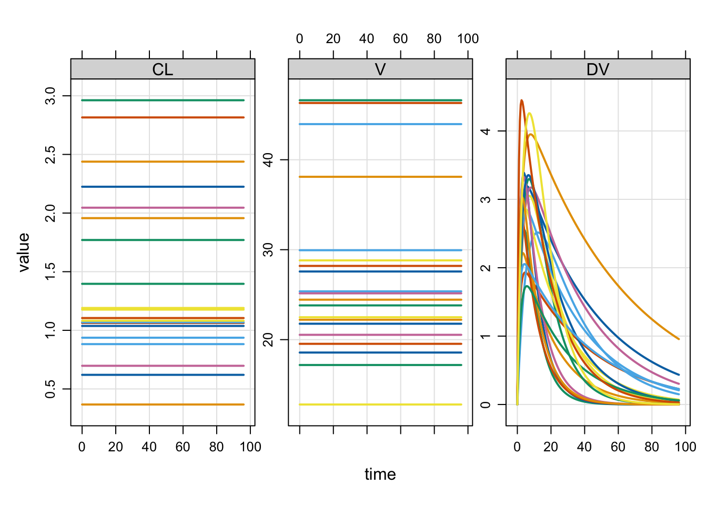
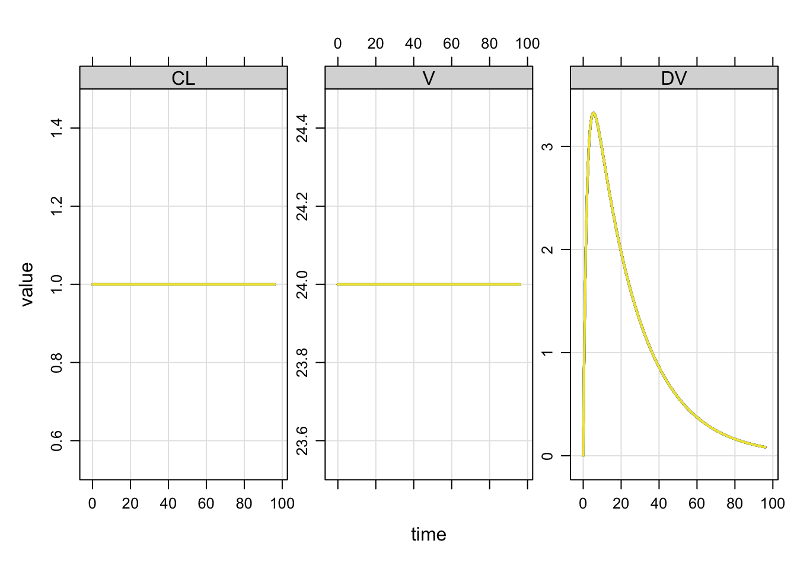

Quick hit demos
These are all miscellaneous features that may be difficult to find in other documentation.
1 $ operator for model object gets the parameter value
If our model parameters are
.
. Model parameters (N=14):
. name value . name value
. CL 1 | SEX 0
. D1 2 | SEXCL 0.7
. F1 1 | SEXVC 0.85
. IC50 10 | VC 20
. KA 1.2 | WT 70
. KIN 100 | WTCL 0.75
. KOUT 2 | WTVC 1we can pick a parameter value with
. [1] 1. [1] 70Or slice off multiple parameters
. $CL
. [1] 1
.
. $WT
. [1] 702 Model names
For programming with a model object, we can extract the names
. $param
. [1] "CL" "VC" "KA" "F1" "D1" "WT" "SEX" "WTCL"
. [9] "WTVC" "SEXCL" "SEXVC" "KIN" "KOUT" "IC50"
.
. $init
. [1] "GUT" "CENT" "RESP"
.
. $capture
. [1] "DV" "CP"
.
. $omega
. [1] "..."
.
. $sigma
. [1] "..."
.
. $omega_labels
. $omega_labels[[1]]
. [1] "ECL" "EVC" "EKA" "EKOUT"
.
.
. $sigma_labels
. $sigma_labels[[1]]
. [1] "EXPO"or get all of the model elements in a list (output not shown)
3 Zero all random effect variances on the fly
If your model has random effects, you can easily and temporarily zero them out.
. Loading model from cache.. $...
. [,1] [,2] [,3]
. ECL: 0.3 0.0 0.0
. EV: 0.0 0.1 0.0
. EKA: 0.0 0.0 0.5It is easy to simulate either with or without the random effects in the simulation: this change can be made on the fly.
Use zero_re to make all random effect variances zero
. $...
. [,1] [,2] [,3]
. ECL: 0 0 0
. EV: 0 0 0
. EKA: 0 0 0By default, both OMEGA and SIGMA are zeroed. Check the arguments for zero_re to see how to selectively zero OMEGA or SIGMA.
Compare the population output

with

4 Plot formulae
We commonly plot simulated output with a special plot method. By default, you get all compartments and output variables in the plot.

The plot can be customized with a formula selecting variables to plot. Other arguments
to lattice::xyplot can be passed as well.
5 Get a data frame of simulated data
By default mrgsolve returns an object of simulated data (and other stuff)
. [1] "mrgsims"
. attr(,"package")
. [1] "mrgsolve"But you can get a data frame with
. [1] "data.frame"or
mrgsolve: mrgsolve.github.io | metrum research group: metrumrg.com